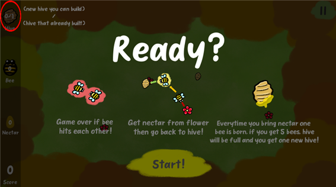
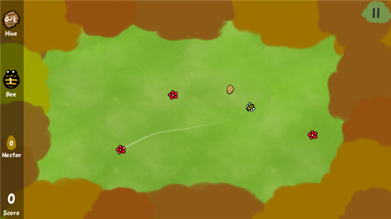
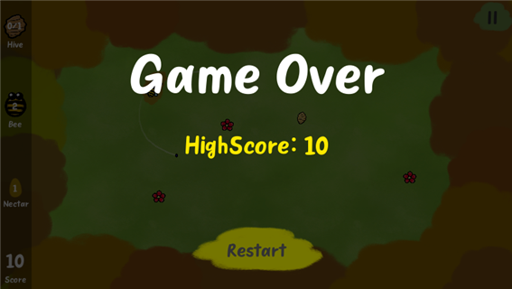

This took a while to finish developing. A month.
I usually refer to the internet but there's no where to find how to implement what I want to do.
Drawing line with mouse, and the object follows the line.
I found how to draw, so I figured it out how to fully implement the result I want.
I almost gave up but when I found out how to code, I was so satisfied.
  Draw line from bee to flower, then bee will follow the line and if it arrives flower then it'll rest for a sec and appear again with nectar.
And then draw line again from bee to hive then it'll do the same thing, but it'll appear without nectar.
You need to save nectar to as much as you can, and everytime you save 5 nectar you can build hive where you want.
But if bees collide with each other, then game over.